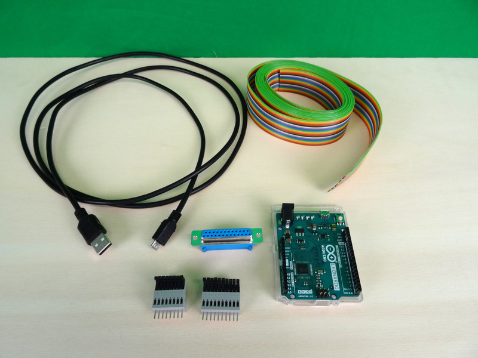
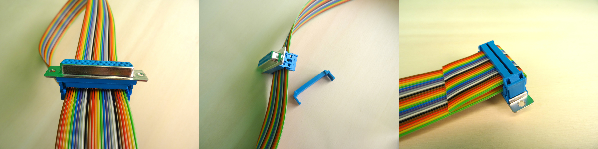
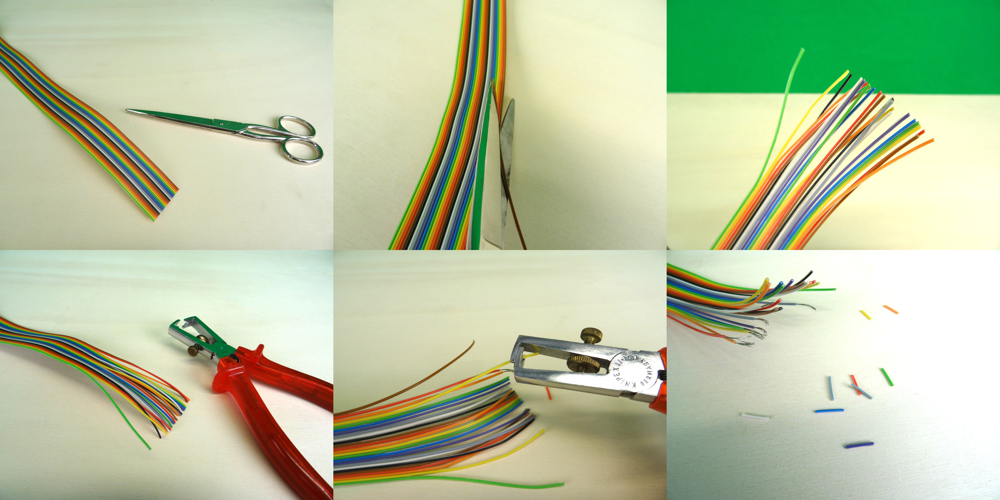
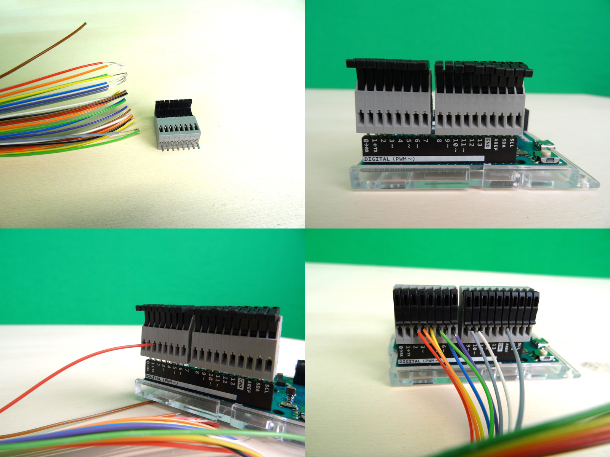
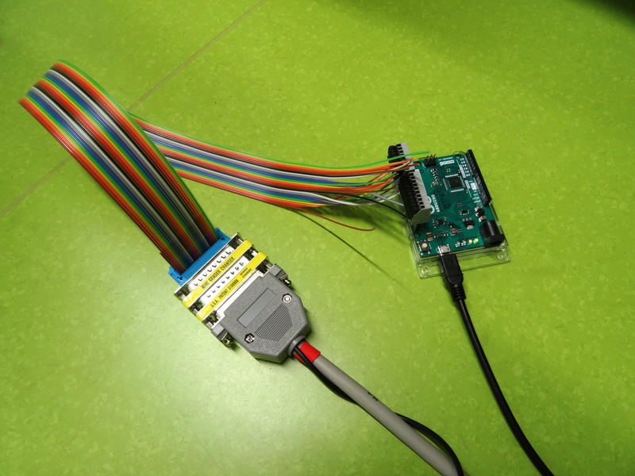

Do-it-yourself instructions¶
Below we provide a shopping list, build instructions, and the firmware to build your own usb-to-ttl device.
Shopping list¶
The items in this shopping list provide a good start to build a usb-to-ttl device without soldering and only basic assembly.
For convenience we provide the “price in euros” and the “item number” for all items, according to an online shop (we picked “Reichelt”).
To find the items, simply type in the “item number” on the Reichelt shop website.
name |
price in euros |
item-no (https://reichelt.com) |
|---|---|---|
arduino leonardo |
18.91 |
ARDUINO LEONARDO |
USB A to micro-B cable |
1.64 |
AK 676-AB2 |
10 pin spring-loaded terminal |
1.51 |
AST 021-10 |
8 pin spring-loaded terminal |
1.26 |
AST 021-08 |
25-pin D-SUB female connector |
0.61 |
D-SUB BU 25FB |
25 pole flat ribbon cable |
9.07 |
AWG 28-25F 3M |
{kind=link}

All items needed to assemble the usb-to-ttl device.¶
Build instructions¶
Step 1¶
{kind=link}

Attaching the db 25 connector to the cables.¶
Step 2¶
{kind=link}

Preparing the wires for putting them into the spring-loaded terminals.¶
Step 3¶
{kind=link}

Connecting the wires with the spring-loaded terminals attached to the Arduino Leonardo.¶
Step 4¶
{kind=link}

The finished device with an attached LPT cable (parallel port).¶
Firmware¶
This is the firmware that should be uploaded to the microcontroller.
Take care to define the outputPins according to how you connected your wires.
1 2 3 4 5 6 7 8 9 10 11 12 13 14 15 16 17 18 19 20 21 22 23 24 25 26 27 28 29 30 31 32 33 34 35 36 37 38 39 40 41 42 43 44 45 46 47 48 49 50 51 52 53 | /*
Device firmware for a USB trigger box (Appelhoff & Stenner, 2021).
MIT License
Copyright 2021 Stefan Appelhoff, Tristan Stenner
*/
#include "Arduino.h";
// the following pin numbers depend on where you actually put the wires on your device
const int outputPins[] = {2,3,4,5,6,7,8,9};
void setup() {
Serial.begin(115200);
// "auto" is inferring variable type from "outputPins" array = int
for(auto pin: outputPins) pinMode(pin, OUTPUT);
}
// The expected byte is an ASCII character in the range of [0, 255]
void loop() {
// If no new information, do nothing
if(!Serial.available()) return;
// Else, read a single byte and format it as ...
// type (_t) "unsigned (u) integer (int) of 8 (8) bits" = uint8_t
uint8_t inChar = Serial.read();
// Set the 8 pins to correspond to the byte
setOutputs(inChar);
// Leave the pins ON for long enough to be detected
// This depends on the sampling rate of the device that receives the byte
delay(2000);
// Then clear again and wait shortly
clearOutputs();
delay(8);
}
// Quick way of setting the 8 pins by using bitwise operators
// for each pin check using "&", whether the byte corresponding to
// own position is ON. We get the own position through the "<<" sliding
// of a 1 across the 00000001 ... 00000010 ... 00000100 ... etc.
// setting a pin to LOW if zero and else HIGH
void setOutputs(uint8_t outChar) {
for(int i=0;i<8;i++) digitalWrite(outputPins[i], outChar&(1<<i));
}
// Clearing all pins, setting their output to LOW
void clearOutputs() {
for(auto pin: outputPins) digitalWrite(pin, LOW);
}
|